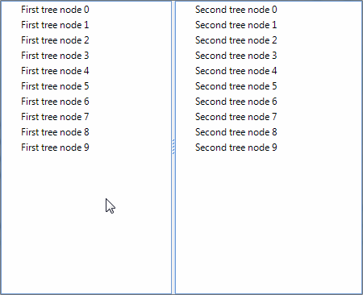

Modify the DragDropService behavior
This article demonstrates how to customize the TreeViewDragDropService behavior and more precisely
how to customize it to copy the nodes when dropped, instead of moving them.

To achieve this scenario we will need to create a descendant of TreeViewDragDropService (lets call it CustomDragDropService)
where we will expose the RadTreeViewElement as a field, so we can use it later. This field will be assigned in the CustomDragDropService class constructor.
We will also need another field of type RadTreeNode which will hold the dragged node. The latter will be assigned in the PerformStart method and will be cleared in the PerformStop method.
Next we need to override the OnPreviewDragOver method, where we will specify upon what conditions a drop will be allowed and finally, in the OnPreviewDragDrop override, we will add the logic for copying the selected nodes instead of moving them:
__[C#] __
class CustomDragDropService : TreeViewDragDropService
{
RadTreeViewElement owner;
RadTreeNode draggedNode;
//Initialize the service
public CustomDragDropService(RadTreeViewElement owner)
: base(owner)
{
this.owner = owner;
}
//Save the dragged node
protected override void PerformStart()
{
base.PerformStart();
TreeNodeElement draggedNodeElement = this.Context as TreeNodeElement;
this.draggedNode = draggedNodeElement.Data;
}
//Clean the saved node
protected override void PerformStop()
{
base.PerformStop();
this.draggedNode = null;
}
//If tree element is hovered, allow drop
protected override void OnPreviewDragOver(RadDragOverEventArgs e)
{
base.OnPreviewDragOver(e);
RadTreeViewElement targetElement = e.HitTarget as RadTreeViewElement;
if (targetElement != null && targetElement != this.owner)
{
e.CanDrop = true;
}
}
//Create copies of the selected node(s) and add them to the hovered node/tree
protected override void OnPreviewDragDrop(RadDropEventArgs e)
{
TreeNodeElement targetNodeElement = e.HitTarget as TreeNodeElement;
RadTreeViewElement targetTreeView = targetNodeElement == null ? e.HitTarget as RadTreeViewElement : targetNodeElement.TreeViewElement;
if (targetTreeView == this.owner)
{
base.OnPreviewDragDrop(e);
return;
}
if (targetTreeView == null)
{
return;
}
List<RadTreeNode> draggedNodes = this.GetDraggedNodes(draggedNode);
targetTreeView.BeginUpdate();
this.owner.BeginUpdate();
bool copyNodes = this.IsCopyingNodes;
foreach (RadTreeNode node in draggedNodes)
{
RadTreeNode newNode = CreateNewTreeNode(node);
if (targetNodeElement != null)
{
targetNodeElement.Data.Nodes.Add(newNode);
}
else
{
targetTreeView.Nodes.Add(newNode);
}
}
this.owner.EndUpdate();
targetTreeView.EndUpdate();
}
//Return a copy of a node
protected virtual RadTreeNode CreateNewTreeNode(RadTreeNode node)
{
return node.Clone() as RadTreeNode;
}
}
__[VB.NET] __
Class CustomDragDropService
Inherits TreeViewDragDropService
Private owner As RadTreeViewElement
Private draggedNode As RadTreeNode
'Initialize the service
Public Sub New(ByVal owner As RadTreeViewElement)
MyBase.New(owner)
Me.owner = owner
End Sub
'Save the dragged node
Protected Overrides Sub PerformStart()
MyBase.PerformStart()
Dim draggedNodeElement As TreeNodeElement = TryCast(Me.Context, TreeNodeElement)
Me.draggedNode = draggedNodeElement.Data
End Sub
'Clean the saved node
Protected Overrides Sub PerformStop()
MyBase.PerformStop()
Me.draggedNode = Nothing
End Sub
'If tree element is hovered, allow drop
Protected Overrides Sub OnPreviewDragOver(ByVal e As RadDragOverEventArgs)
MyBase.OnPreviewDragOver(e)
Dim targetElement As RadTreeViewElement = TryCast(e.HitTarget, RadTreeViewElement)
If Not targetElement Is Nothing AndAlso Not targetElement Is Me.owner Then
e.CanDrop = True
End If
End Sub
'Create copies of the selected node(s) and add them to the hovered node/tree
Protected Overrides Sub OnPreviewDragDrop(ByVal e As RadDropEventArgs)
Dim targetNodeElement As TreeNodeElement = TryCast(e.HitTarget, TreeNodeElement)
Dim targetTreeView As RadTreeViewElement
If targetNodeElement Is Nothing Then
targetTreeView = TryCast(e.HitTarget, RadTreeViewElement)
Else
targetTreeView = targetNodeElement.TreeViewElement
End If
If targetTreeView Is Me.owner Then
MyBase.OnPreviewDragDrop(e)
Return
End If
If targetTreeView Is Nothing Then
Return
End If
Dim draggedNodes As List(Of RadTreeNode) = Me.GetDraggedNodes(draggedNode)
targetTreeView.BeginUpdate()
Me.owner.BeginUpdate()
Dim copyNodes As Boolean = Me.IsCopyingNodes
For Each node As RadTreeNode In draggedNodes
Dim newNode As RadTreeNode = CreateNewTreeNode(node)
If Not targetNodeElement Is Nothing Then
targetNodeElement.Data.Nodes.Add(newNode)
Else
targetTreeView.Nodes.Add(newNode)
End If
Next node
Me.owner.EndUpdate()
targetTreeView.EndUpdate()
End Sub
'Return a copy of a node
Protected Overridable Function CreateNewTreeNode(ByVal node As RadTreeNode) As RadTreeNode
Return TryCast(node.Clone(), RadTreeNode)
End Function
End Class
After the custom drag and drop behavior is created, we need to replace the default one. This can be achieved in the CreateDragDropService method of RadTreeViewElement, so we create a new element for the purpose:
__[C#] __
class CustomTreeViewElement : RadTreeViewElement
{
//Enable themeing for the element
protected override Type ThemeEffectiveType
{
get
{
return typeof(RadTreeViewElement);
}
}
//Replace the default drag drop service with the custom one
protected override TreeViewDragDropService CreateDragDropService()
{
return new CustomDragDropService(this);
}
}
__[VB.NET] __
Class CustomTreeViewElement
Inherits RadTreeViewElement
'Enable themeing for the element
Protected Overrides ReadOnly Property ThemeEffectiveType() As Type
Get
Return GetType(RadTreeViewElement)
End Get
End Property
'Replace the default drag drop service with the custom one
Protected Overrides Function CreateDragDropService() As TreeViewDragDropService
Return New CustomDragDropService(Me)
End Function
End Class
Now we need to use this CustomTreeViewElement in the tree. To do that we need to pass a new instance of this element in the CreateTreeViewElement of RadTreeView decendant:
__[C#] __
class CustomTreeView : RadTreeView
{
//Replace the default element with the custom one
protected override RadTreeViewElement CreateTreeViewElement()
{
return new CustomTreeViewElement();
}
//Enable theming for the control
public override string ThemeClassName
{
get
{
return typeof(RadTreeView).FullName;
}
}
}
__[VB.NET] __
Class CustomTreeView
Inherits RadTreeView
'Replace the default element with the custom one
Protected Overrides Function CreateTreeViewElement() As RadTreeViewElement
Return New CustomTreeViewElement()
End Function
'Enable theming for the control
Public Overrides Property ThemeClassName As String
Get
Return GetType(RadTreeView).FullName
End Get
Set(value As String)
MyBase.ThemeClassName = value
End Set
End Property
End Class
Finally, lets populate the tree and test the new behavior:
__[C#] __
customTreeView1.AllowDragDrop = true;
customTreeView1.MultiSelect = true;
customTreeView2.AllowDragDrop = true;
customTreeView2.MultiSelect = true;
for (int i = 0; i < 10; i++)
{
customTreeView1.Nodes.Add("First tree node " + i);
customTreeView2.Nodes.Add("Second tree node " + i);
}
__[VB.NET] __
CustomTreeView1.AllowDragDrop = True
CustomTreeView1.MultiSelect = True
CustomTreeView2.AllowDragDrop = True
CustomTreeView2.MultiSelect = True
For i As Integer = 0 To 9
CustomTreeView1.Nodes.Add("First tree node " & i)
CustomTreeView2.Nodes.Add("Second tree node " & i)
Next i
The result can be observed at the screen shot at the top.